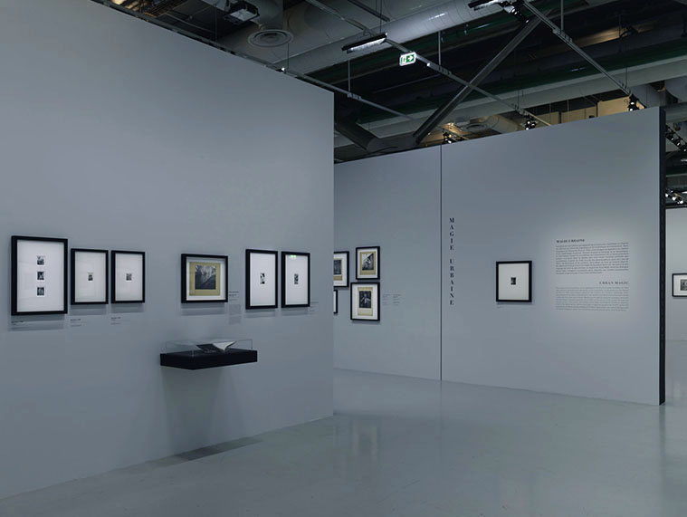

Experiment 2: Proposed Structure For My Day/Probably Won't Do Any Of This
Date: April 2020
Size: 76 x 188 mm
A bookmark with two versions of a written outline for a "productive" day, one is specific and pragmatic, whilst the other is more relaxed and vague. Inspired by wall texts seen in the Centre Pompidou which contain French text and an English translation, the layouts vary between exhibitions but establish one language as dominant and the other as supportive.
This experiment was based on something someone mentioned in class which prompted me to write out a structure for my days, so I could have a schedule to work to. So I wrote one down that designated specific times for certain activities. I thought about what I should be doing to make a day productive. Upon realising that this was completely unrealistic, I wrote another version with more flexible time slots and more vague activities. When seeing the two texts side-by-side it reminded me of wall texts I've seen at the Centre Pompidou.
This memory was recalled as I had recently read Design as Author (1993) by Michael Rock, and a section of the essay that stood out to me was of 'designer as translator'. Holding onto the idea of translating language, I laid out the writings as if it were a wall text in a museum and used font weights to distinguish the two columns, whilst also suggesting that they are the same text.

Although the outcome is nothing special I enjoyed the serendipity of the process, from the lack of conceptualising to the brevity of the designing. I went with that inkling of an idea and didn't try to justify every decision that was made, the end result was something I wouldn't have made otherwise.